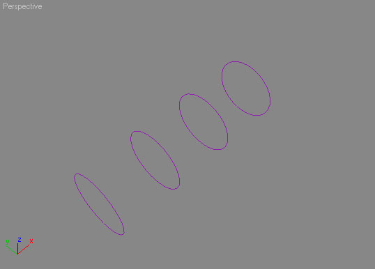
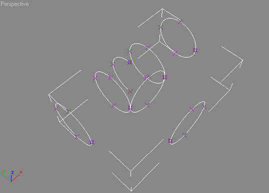
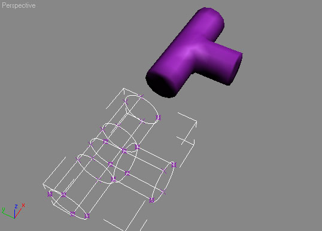

Creating A Simple Mesh Using Splines
This is my first tutorial ever so bear with me  .
.
Preface
This tutorial expects that you know your way around Max, so things like applying materials and UVW mapping will not be covered here — there are other pages for that.
If you have never worked with splines before, hopefully after reading this article you will think totally differently about how you model. Splines have features such as easy level of detail adjustment without having to handle meshes on a per-face basis. Splines are basically a bunch of lines that can be shaped to create a 'skeleton' (Officially known as a Spline Network) of an object. You then apply the surface modifier to this skeleton to get an actual object.
Getting Started
In this tutorial we will be creating a T-Section pipe. The principles used to create this object can be generally be applied to almost everything you can think of.
To get started, first we need to set our grid to a power of two, 8 or 16 is a good number, I also suggest cutting gridsnap on. Next draw a circle with the radius of 64 in the left view. After doing so, convert it to an editable spline. Go to the modify tab and select element. Select the circle we just created and clone(shift+drag) it over 128 units Do this 2 more times until you end up with the following:

Starting to make our 'skeleton' |
This has created the main body of our pipe. You're probably wondering how a bunch of circles is going to help us make a pipe but you will soon see
Select a circle (in the top view) and clone it. We now need to rotate it 90 degrees (have Angle snapping on) so we can create the connecting pipe. After doing so, position it between the middle two circles. Now clone it down 128 Units. We now need to go into Segment mode and select the top two segments of a circle (In the top view) and copy it to the middle of the long pipe(It will be 64 units from either existing circle). You should end up with something like this:

See all those X's? We're about to play connect the dots between them |
The reason we did this is so that the other pipe will have something to connect to. The thing about splines is that all spline vertexes must be connect via another spline. Gaps will cause the surface not to be created.
Now that we have all of our curved splines made, we can make the splines (lines in this case) that connect them all. You MUST cut endpoint snapping on for this to work correctly. Go through connecting all of the verts that are parallel to each other (It'll make sense once you do it a while) using the new line option under the editable spline modifier. NOTE—The order in which you create the spline determines which way the normals will point by default. Try to make them all run in the same direction
A neat thing about splines is that you can create a reference copy of the base spline skeleton and edit the surface it creates in real time. To do it, all you have to do is select the editable spline (The entire object, with no selection modes active) clone it to a new location, and when Max pops the Clone Options Dialog up, select Reference. Now apply the Surface Modifier and hopefully a meshed version of your pipe will show up. Also, make sure Remove Interior Patches is checked, and check Flip Normals if the object is inside-out. Right now is a good time to adjust the resolution by changing the 'Patch Topology Steps' (Higher is more polys).

Finished spline 'skeleton' and referenced surface |
If you didn't end up with this, make sure that you didn't miss any verts while adding lines, and that they are all lined up (Having endpoint snap on should of prevented this though). This is the number one step that where you will run into problems. I have noticed that sometimes a mesh just refuses to be created. In that case, just re-make your lines (Not the circles). The nice thing about having the referenced copy is that you can watch the mesh being re-generated as you create (or move!) the lines. A matter of fact, you could of created this reference copy from the very beginning and watched the mesh be created as you placed all of the splines.
Finishing Up
If you are happy with the results, you can now convert the surface to an editable mesh and apply the optimize modifier. The modifier generally does a good job at removing redundant polys, and you can always do any final editing in its mesh state. I do suggest keeping the spline 'skeleton' in case you ever need to change it.
Remember, these are just the basics, but can be applied in different ways. Look for my advanced tutorial on creating 'curved' and 'rounded' objects.
Comments / suggestions welcome at hawkeye 'at' everyzero.com —Dr.Nick